说明
本排名仅为各个枪的类别之内排名，不能作跨类别比较（例如：狙击枪的 S 梯队强度并不等同融合步枪的 S 梯队强度）。
注解中提及到的「双／三硬直组合」指大口径弹药、自带反势不可挡勇士功能的枪、阻止力 Perk 三者的任意组合，这些 Perk 能让战斗人员更容易被你的子弹打出硬直，从而有提升生存的效果。
「弹药生成 Perk」包括空中扳机／沙场备战等传统意义上帮助产弹的 Perk，亦指事不过四、精准连击等凭空生成子弹的 Perk。
划掉的字表示该来源现已不可获取。
榴弹发射器-弹鼓
| 武器 | 图标 | 排名 | 评级 | 属性 | 框架 | 赛季 | 来源 | 勇士 | 弹药生成 | 枪管 | 弹匣 | 大师 | Perk 1 | Perk 2 | 起源特性 | 注解 |
|---|---|---|---|---|---|---|---|---|---|---|---|---|---|---|---|---|
| 边缘交通 猛攻版本 | 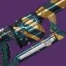 | 1 | S | 虚空 | 适配 | 29 | 猛攻 | 38 | 高速发射 | 尖刺榴弹 | 操控性 | 级联点 嫉妒军械库 连锁反应 | 爆炸光能 诱导推销 元素磨砺 | 不屈不挠 | 粘性榴弹（已绝版）+级联点+爆炸光能仍是传说重弹中爆发最高的 其他 Perk 也不错 | |
| VS 寒冷抑制 | 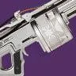 | 2 | S | 冰影 | 速射 | 29 | 晚星之主 | 50 | 高速发射 | 尖刺榴弹 | 操控性 | 级联点 嫉妒军械库 | 聚合充能 爆炸光能 腹背受敌 | 布瑞遗产 | 没粘性榴弹但其他方面 Perk 和起源都比边缘交通好 | |
| 永存者 | 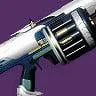 | 3 | S | 缚丝 | 速射 | 27 | 史诗永恒沙漠 | 49 | 高速发射 | 尖刺榴弹 微型榴弹 | 操控性 | 嫉妒军械库 | 聚合充能 元素磨砺 诱导推销 | 参考框架 | 最佳框架 嫉妒军械库+好的持续伤害 Perk | |
| 科拉西斯的苦恼 | 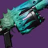 | 4 | S | 缚丝 | 速射 | 29 | 梦魇根源 | 50 | 高速发射 | 尖刺榴弹 微型榴弹 | 操控性 | 嫉妒军械库 重建 连锁反应 | 混沌重塑 腹背受敌 诱导推销 | 和谐回声 | 类似永存者但有腹背受敌 起源更差 | |
| 爱与死亡 | 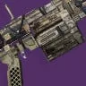 | 5 | S | 烈日 | 压缩波形 | 29 | 月球 | 40 | 高速发射 | 高速弹药 | 操控性 | 级联点 嫉妒军械库 即兴弹药 | 聚合充能 诱导推销 连锁反应 | 减员激励 | 在能打直击伤害的上潜力很高 爆炸光能没有作用 但清怪不错 | |
| 时运无常 | 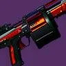 | 6 | A | 烈日 | 速射 | 27 | 忠诚纪念碑 萨瓦拉 | 40 | 高速发射 | 尖刺榴弹 | 操控性 | 嫉妒军械库 辉耀炽热 | 诱导推销 爆炸光能 | 问题解决者 | 最佳框架 + 好的持续伤害起源+嫉妒军械库+重要伤害 Perk | |
| 末日 | 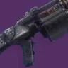 | 7 | A | 电弧 | 适配 | 29 | 智谋 | 33 | 高速发射 | 尖刺榴弹 | 操控性 | 嫉妒军械库 羸弱能量球 | 诱导推销 爆炸光能 连锁反应 | 边打边跑 | 类似时运无常 但起源更差 | |
| 苦乐参半 | 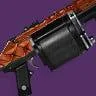 | 8 | A | 电弧 | 适配 | 25 | 仄 凯尔之陨? | 29 | 高速发射 | 尖刺榴弹 | 操控性 | 嫉妒军械库 羸弱能量球 | 诱导推销 爆炸光能 | 黑暗乙太收割者 | 类似时运无常但框架更差 起源在部分场景还不错 | |
| 铁甲骑兵 GL3 | 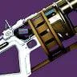 | 9 | A | 缚丝 | 适配 | 28 | 试炼 | 55 | 高速发射 | 尖刺榴弹 | 操控性 | 嫉妒军械库 嫉妒刺客 | 诱导推销 爆炸光能 连锁反应 | 战斗咆哮 | 类似苦乐参半 但起源更差 另有嫉妒刺客作冷门用途 | |
| 恶德姊妹 | 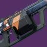 | 10 | A | 缚丝 | 适配 | 25 | 萨瓦拉 | 24 | 高速发射 | 尖刺榴弹 | 操控性 | 嫉妒军械库 切割 | 诱导推销 爆炸光能 高地 | 绝路专注 | 类似苦乐参半 但起源更差 不知为何还有切割 | |
| 统御 | 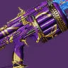 | 11 | A | 虚空 | 适配 | 29 | 节点.超控.阿瓦隆 | 34 | 高速发射 | 粘性榴弹 尖刺榴弹 | 操控性 | 嫉妒刺客 自动填装枪套 | 爆炸光能 级联点 | 高尚事迹 | 唯一冷门用途是粘性榴弹+爆炸光能叠层 但边缘交通已经能做到 | |
| 大犬座 | 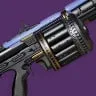 | 12 | A | 烈日 | 速射 | 29 | 破碎王座 | 36 | 高速发射 | 尖刺榴弹 微型榴弹 | 操控性 | 重建 狂暴 辉耀炽热 | 聚合充能 诱导推销 连锁反应 | 劣迹斑斑 | 没嫉妒军械库 但伤害 Perk 相当优秀 也有双伤害 Perk 作冷门用途 | |
| 维度内旋轮线 | 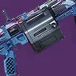 | 13 | B | 冰影 | 压缩波形 | 29 | 内欧姆那 | 32 | 高速发射 | 高速弹药 | 操控性 | 嫉妒军械库 嫉妒刺客 霜华窃取者 | 诱导推销 我为人人 结晶残花 | 纳米技术追踪导弹 | 即使起源不错仍是爱与死亡的绝对下位 | |
| 咒骂 | 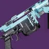 | 14 | B | 电弧 | 速射 | 29 | 王座世界掉落 | 33 | 高速发射 | 尖刺榴弹 粘性榴弹 | 操控性 | 嫉妒刺客 小丑皇弹药筒 羸弱能量球 | 诱导推销 爆炸光能 连锁反应 | 心灵骇入 | 没嫉妒军械库 持续伤 Perk 不是最好的 不过心灵骇入还不错 | |
| 喧嚣 | 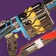 | 15 | B | 电弧 | 压缩波形 | 29 | 忠诚纪念碑 | 27 | 高速发射 | 高速弹药 | 操控性 | 嫉妒军械库 嫉妒刺客 沙场备战 | 我为人人 黄金三角 连锁反应 | 优秀竞争者 | 因起源原因 整体不如维度内旋轮线 | |
| 叛乱疾呼 | 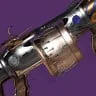 | 16 | B | 烈日 | 适配 | 29 | 单人行动 | 48 | 高速发射 | 尖刺榴弹 | 操控性 | 辉耀炽热 爆破专家 | 聚合充能 腹背受敌 超级杀戮弹匣 | 先锋决心 | 游走 Perk 有意思 好伤害 Perk 但只能靠爆破专家填装 | |
| 寰宇 | 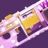 | 17 | B | 虚空 | 速射 | 29 | 忠诚纪念碑 | 50 | 高速发射 | 尖刺榴弹 微型榴弹 | 操控性 | 小丑皇弹药筒 枯萎凝视 | 诱导推销 爆炸光能 连锁反应 | 绝路专注 | 为枯萎凝视牺牲了好回填 Perk | |
| 马斯利翁-C | 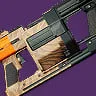 | 18 | C | 烈日 | 速射 | 20 | 枪匠 | 30 | 高速发射 | 尖刺榴弹 | 操控性 | 嫉妒刺客 | 爆炸光能 掌控全场 级联点 | Häkke 突入武装 | 没好回填 Perk 伤害 Perk 够用 | |
| 温迪戈 GL3 | 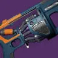 | 19 | C | 电弧 | 适配 | 29 | 萨瓦拉 | 43 | 高速发射 | 尖刺榴弹 | 操控性 | 自动填装枪套 小丑皇弹药筒 | 爆炸光能 级联点 | 问题解决者 | 相比马斯利翁-C 来说 有更好的回填 Perk 但没有掌控全场 | |
| 鸦群 | 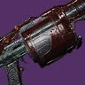 | 20 | C | 虚空 | 速射 | 21 | 铁旗 | 31 | 高速发射 | 尖刺榴弹 | 操控性 | 自动填装枪套 小丑皇弹药筒 | 掌控全场 级联点 | 藏匿之狼 | 类似温迪戈 GL3+有掌控全场 但起源更差 | |
| 干扰 VI | 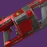 | 21 | C | 电弧 | 适配 | 10 | 仄 永恒挑战 | 36 | 高速发射 | 尖刺榴弹 | 操控性 | 自动填装枪套 小丑皇弹药筒 | 掌控全场 | None | 只有掌控全场 没有起源 | |
| 提丰 GL5 | 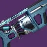 | 22 | C | 冰影 | 适配 | 16 | 枪匠 | 45 | 高速发射 | 尖刺榴弹 | 操控性 | 爆破专家 | 爆炸光能 | Omolon 流体动力 | 很偏门的 Perk 组合 而且第二个弹匣吃不到任何收益 | |
| 记忆障碍 | 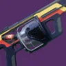 | 23 | D | 虚空 | 适配 | 14 | 仄 | 23 | 高速发射 | 尖刺榴弹 | 操控性 | 自动填装枪套 小丑皇弹药筒 | 狂暴 连锁反应 | None | 没真正的持续伤害 Perk | |
| 娱乐大众 | 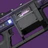 | 24 | D | 虚空 | 适配 | 12 | 智谋 | 22 | 高速发射 | 尖刺榴弹 | 操控性 | 小丑皇弹药筒 盗墓者 | 狂暴 连锁反应 | 边打边跑 | 回填 Perk 差 也没有持续伤害 Perk | |
| 爆发赶猎 | 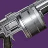 | 25 | D | 电弧 | 适配 | 12 | 仄 | 48 | 高速发射 | 尖刺榴弹 | 操控性 | 小丑皇弹药筒 | 狂暴 连锁反应 | None | 与记忆障碍相同 但没有自填 | |
| 贝伦格记忆 | 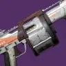 | 26 | D | 虚空 | 速射 | 11 | 仄 | 28 | 高速发射 | 尖刺榴弹 | 操控性 | 小丑皇弹药筒 | 狂暴 | None | 几乎没有任何有效 Perk |
线性融合步枪
| 武器 | 图标 | 排名 | 评级 | 属性 | 框架 | 赛季 | 来源 | 勇士 | 弹药生成 | 枪管 | 弹匣 | 大师 | Perk 1 | Perk 2 | 起源特性 | 注解 |
|---|---|---|---|---|---|---|---|---|---|---|---|---|---|---|---|---|
| 揭纱露眼 | 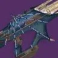 | 1 | S | 虚空 | 精密 | 29 | 异端深渊 | 45 | 槽化枪管 | 离子电池 | 充能时间 | 事不过四 超级杀戮弹匣 | 元素磨砺 邪剑守则 连锁反应 | 异端行径 | 遥遥领先的最强线性：双伤害 Perk 事不过四+优秀的持续伤害 Perk 超强起源 | |
| 灾变 | 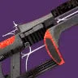 | 2 | S | 烈日 | 精密 | 29 | 门徒誓约 | 37 | 槽化枪管 | 强化电池 | 充能时间 | 事不过四 | 聚合充能 元素磨砺 诱导推销 | 灵魂饮者 | 4 号位比揭纱露眼稍好 但明显低一档 | |
| 里德的悔恨 | 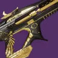 | 3 | A | 冰影 | 精密 | 29 | 试炼 | 40 | 槽化枪管 | 强化电池 | 充能时间 | 精准连击 | 聚焦狂怒 火线 | Veist 尖刺 | 最佳框架 总伤害高于任何适配点射枪 起源不错 | |
| 太攀蛇-4fr | 4 | A | 虚空 | 精密 | 29 | 枪匠 | 33 | 槽化枪管 | 强化电池 | 充能时间 | 精准连击 | 聚焦狂怒 火线 | Veist 尖刺 | 功能上与里德的悔恨相同 匹配激涌方向由于是冰属性所以更差 | ||
| 沙之界线 | 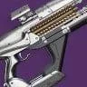 | 5 | A | 电弧 | 精密 | 24 | 仄 | 28 | 槽化枪管 | 强化电池 | 充能时间 | 小丑皇弹药筒 爆破专家 解构 | 诱导推销 火线 | 光照无影 | 没产弹 Perk 但总伤害仍高于适配点射 起源可用于回填 | |
| 蔷薇的蔑视 | 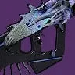 | 6 | B | 烈日 | 适配点射 | 29 | 梦魇根源 | 39 | 箭头制退器 | 强化电池 | 充能时间 | 回转弹药 | 聚合充能 混沌重塑 腹背受敌 | 和谐回声 | 新 Perk 下最佳适配点射 | |
| 风暴猎人 | 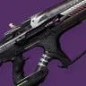 | 7 | B | 电弧 | 适配点射 | 29 | 二象性 | 32 | 箭头制退器 | 强化电池 | 充能时间 | 小丑皇弹药筒 超充弹匣 震颤反馈 | 聚合充能 元素磨砺 换挡 | 苦涩怨恨 | 伪双伤害 Perk 可惜框架不佳 | |
| 激光画家 | 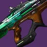 | 8 | B | 缚丝 | 精密 | 29 | 智谋 | 26 | 槽化枪管 | 强化电池 | 充能时间 | 小丑皇弹药筒 自动填装枪套 | 聚焦狂怒 | Veist 尖刺 | 没产弹 Perk 伤害 Perk 也比更高梯队的精密框架弱 | |
| 启航望远镜 | 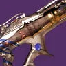 | 9 | B | 电弧 | 精密 | 29 | 仄 | 26 | 槽化枪管 | 强化电池 | 充能时间 | 小丑皇弹药筒 | 聚焦狂怒 | 右勾拳 | 基本是没有 自动填装枪套 或 Veist 的激光画家 | |
| 闪耀 | 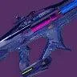 | 10 | B | 缚丝 | 适配点射 | 29 | 萨瓦拉 | 36 | 箭头制退器 | 强化电池 | 充能时间 | 回转弹药 切割 | 诱导推销 腹背受敌 | Veist 尖刺 | 伤害 Perk 比蔷薇的蔑视差 | |
| 毒蜥 4fr | 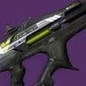 | 11 | C | 冰影 | 精密 | 24 | 枪匠 | 32 | 槽化枪管 | 强化电池 | 充能时间 | 嫉妒刺客 | 精准工具 高地 火线 | Veist 尖刺 | 很不方便的填装 Perk 但仍有 Veist 起源和还行的伤害 Perk | |
| 疾风跃升 | 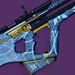 | 12 | C | 虚空 | 适配点射 | 28 | 忠诚纪念碑 | 33 | 箭头制退器 | 强化电池 | 充能时间 | 嫉妒军械库 重建 枯萎凝视 | 诱导推销 精准工具 | Veist 尖刺 | 没回转弹药 但作为适配点射总括而言仍算优秀 | |
| 无望请愿者 | 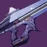 | 13 | C | 虚空 | 适配点射 | 29 | 苦命鸳鸯 | 34 | 箭头制退器 | 强化电池 | 充能时间 | 重建 羸弱能量球 | 精准工具 高地 腹背受敌 | 龙之复仇 | 基本是起源更差 没有诱导推销的疾风跃升 | |
| 任性原罪 | 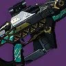 | 14 | C | 电弧 | 适配点射 | 29 | 试炼 | 37 | 箭头制退器 | 强化电池 | 充能时间 | 嫉妒刺客 高强度型弹药储备 | 诱导推销 精准工具 | 万能卡牌 | 高强度型弹药储备在 3 号位很独特 但其他方面不太好 | |
| 螺纹针 | 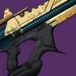 | 15 | D | 虚空 | 精密 | 13 | 仄 永恒挑战 | 35 | 槽化枪管 | 强化电池 | 充能时间 | 小丑皇弹药筒 自动填装枪套 | 狂乱 | None | 伤害 Perk 一般 没有起源 | |
| 树蛇-4fr | 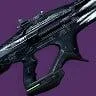 | 16 | D | 电弧 | 适配点射 | 27 | 忠诚纪念碑 萨瓦拉 | 31 | 箭头制退器 | 强化电池 | 充能时间 | 嫉妒军械库 快速命中 | 精准工具 | Veist 尖刺 | 嫉妒军械库作为唯一回填 Perk 不太好 精准工具也比较一般 | |
| 射后不理 | 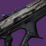 | 17 | D | 冰影 | 适配点射 | 29 | 炽天使之盾 | 33 | 箭头制退器 | 强化电池 | 充能时间 | 沙场备战 充盈 | 聚焦狂怒 | Veist 尖刺 | 加强后的聚焦狂怒不错 但被框架拖累 | |
| 捕鸟蛛 | 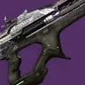 | 18 | E | 电弧 | 精密 | 13 | 仄 | 30 | 槽化枪管 | 强化电池 | 充能时间 | 沙场备战 | 盒式呼吸法 | None | 盒式呼吸法是伪伤害 Perk | |
| 海盗之怒 | 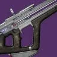 | 19 | E | 烈日 | 精密 | 12 | 仄 永恒挑战 | 26 | 槽化枪管 | 强化电池 | 充能时间 | 脉搏监控 | 高强度型弹药储备 | None | 还不如当成没 Perk |
机枪
| 武器 | 图标 | 排名 | 评级 | 属性 | 框架 | 赛季 | 来源 | 勇士 | 弹药生成 | 枪管 | 弹匣 | 大师 | Perk 1 | Perk 2 | 起源特性 | 注解 |
|---|---|---|---|---|---|---|---|---|---|---|---|---|---|---|---|---|
| 惩戒措施 | 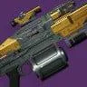 | 1 | S | 虚空 | 攻击型 | 29 | 玻璃拱顶 | 50 | 箭头制退器 槽化枪管 | 合金弹匣 加大弹匣 | 填装 操控性 | 爆破专家 失衡弹药 转向 | 击杀记录 瓦解 我为人人 | 失时弹匣 | 神器支援极强 可用爆破专家 起源优秀 框架优秀 | |
| 锤头 | 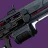 | 2 | S | 虚空 | 适配 | 29 | 竞技场行动 | 40 | 箭头制退器 槽化枪管 | 合金弹匣 大口径弹药 加大弹匣 | 填装 操控性 | 爆破专家 狂暴 失衡弹药 | 瓦解 铤而走险 超级杀戮弹匣 | 煅炉眷属 | 伤害曲线不如惩戒措施 起源更差 但能反屏障 | |
| 伊尔·约特之歌 | 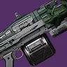 | 3 | S | 电弧 | 适配 | 29 | 克洛塔的末日 | 53 | 箭头制退器 槽化枪管 | 合金弹匣 加大弹匣 | 填装 操控性 | 爆破专家 震颤反馈 不屈 | 武器大师 超级杀戮弹匣 级联点 | 诅咒怨魂 | 联动不如虚空选项 但配近战构筑仍非常强 | |
| 束缚化身 IV | 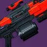 | 4 | S | 缚丝 | 高冲击力 | 28 | 熔炉竞技场 | 38 | 箭头制退器 槽化枪管 | 合金弹匣 加大弹匣 | 填装 操控性 | 爆破专家 切割 幼雏 | 巨脉蜻蜓 撕裂 | 加速突击 | 综合使用体验和手感最佳的缚丝机枪 有神器联动 | |
| 专业记忆 | 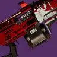 | 5 | S | 缚丝 | 攻击型 | 29 | 苍白之心 | 45 | 箭头制退器 槽化枪管 | 合金弹匣 大口径弹药 加大弹匣 | 填装 操控性 | 爆破专家 撕裂 幼雏 | 铤而走险 超级杀戮弹匣 集体行动 | 庄家之选 | 庄家之选套装选择 伤害曲线和 Perk 也强 可选撕裂+超充器 | |
| 环形逻辑 | 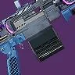 | 6 | S | 缚丝 | 适配 | 29 | 内欧姆那 | 51 | 箭头制退器 槽化枪管 | 合金弹匣 大口径弹药 加大弹匣 | 填装 操控性 | 爆破专家 萤火虫 | 铤而走险 幼雏 超级杀戮弹匣 | 纳米技术追踪导弹 | 纳米技术追踪导弹武器家族里较弱的一个 但整体仍很好 | |
| 忧愁之鸠 | 7 | S | 虚空 | 高冲击力 | 29 | 众神殿 | 44 | 箭头制退器 槽化枪管 | 合金弹匣 大口径弹药 | 填装 操控性 | 瓦解 维度偏移 失衡弹药 | 巨脉蜻蜓 超级杀戮弹匣 击杀记录 | 椭圆轨道 | 愿意放弃填装 Perk 的话 是很强的虚空溅射机枪 | ||
| 迪亚布勒雷 06 | 8 | S | 缚丝 | 速射 | 29 | 扭曲 | 33 | 箭头制退器 槽化枪管 | 合金弹匣 大口径弹药 加大弹匣 | 填装 操控性 | 幼雏 自动填装枪套 维持生计 | 巨脉蜻蜓 转向 击杀记录 | 腐臭弹药 | 史上最强缚丝溅射机枪 | ||
| 纪念 | 9 | S | 虚空 | 适配 | 29 | 深岩墓室 | 55 | 箭头制退器 槽化枪管 | 合金弹匣 加大弹匣 | 填装 操控性 | 蜻蜓 重建 适配弹药 | 冲击支撑 转向 击杀记录 | 布瑞遗产 | 唯一的冲击支撑机枪 不稳定可轻松从神器获得 | ||
| 时间子句 | 10 | S | 烈日 | 攻击型 | 29 | 涅索斯 | 36 | 箭头制退器 槽化枪管 | 合金弹匣 大口径弹药 加大弹匣 | 填装 操控性 | 爆破专家 巨脉蜻蜓 辉耀炽热 | 超级杀戮弹匣 击杀记录 燃烧野心 | 致命失误 | 很强的双烈日溅射 Perk 选择 而且仍有爆破专家 | ||
| 热能侵蚀 | 11 | S | 烈日 | 速射 | 29 | 木卫二 | 32 | 箭头制退器 槽化枪管 | 合金弹匣 大口径弹药 加大弹匣 | 填装 操控性 | 爆破专家 辉耀炽热 | 巨脉蜻蜓 超级杀戮弹匣 燃烧野心 | 御寒装备 | 时间子句替代品 起源更差 但有辉耀炽热 + 巨脉蜻蜓 | ||
| 强音-45 | 12 | A | 缚丝 | 适配 | 23 | 枪匠 | 60 | 箭头制退器 槽化枪管 | 合金弹匣 加大弹匣 | 填装 操控性 | 爆破专家 切割 | 幼雏 黄金三角 猛攻 | Suros 协同 | 因起源和 Perk 多样性不如 S 梯队的选项而降级 不过弹药生成不错 | ||
| 指挥链 | 13 | A | 冰影 | 适配 | 29 | 单人行动 | 54 | 箭头制退器 槽化枪管 | 合金弹匣 大口径弹药 加大弹匣 | 填装 操控性 | 墓碑 丰盈满溢 | 爆破专家 巨脉蜻蜓 击杀记录 | 万能卡牌 | 综合优秀 想纯溅射可用墓碑 + 巨脉蜻蜓 | ||
| 隐秘观测 | 14 | A | 冰影 | 攻击型 | 27 | 开普勒 | 42 | 箭头制退器 槽化枪管 | 合金弹匣 大口径弹药 加大弹匣 | 填装 操控性 | 爆破专家 墓碑 | 蜻蜓 击杀记录 霜华窃取者 | 详尽研究 | 冰影组合占位太多 但框架 + 起源 + Perk 组合仍不错 | ||
| 库里姆的终界 | 15 | A | 冰影 | 高冲击力 | 29 | 国王的陨落 | 46 | 箭头制退器 槽化枪管 | 合金弹匣 加大弹匣 | 填装 操控性 | 爆破专家 不屈 | 墓碑 结晶残花 超级杀戮弹匣 | 火力满溢 | 多个填装辅助 Perk 但手动填装可由火力满溢改善 | ||
| 终点视界 玖的仪式版本 | 16 | A | 电弧 | 高冲击力 | 26 | 48 | 箭头制退器 槽化枪管 | 合金弹匣 大口径弹药 加大弹匣 | 填装 操控性 | 爆破专家 蜻蜓 | 击杀记录 震颤反馈 精准工具 | 重力井 | 可能是最朴素的爆破专家机枪 但仍不错 | |||
| 远方黎明 | 17 | A | 烈日 | 攻击型 | 29 | 忠诚纪念碑 | 35 | 箭头制退器 槽化枪管 | 合金弹匣 大口径弹药 | 填装 操控性 | 燃烧野心 维持生计 即兴弹药 | 巨脉蜻蜓 辉耀炽热 转向 | 梦想差事 | 烈日双溅射 Perk + 一些填装 Perk | ||
| 终点视界 | 18 | A | 电弧 | 高冲击力 | 29 | 守望者尖塔 | 48 | 箭头制退器 槽化枪管 | 合金弹匣 大口径弹药 | 填装 操控性 | 巨脉蜻蜓 超充弹匣 涓流充能 | 换挡 超级杀戮弹匣 震颤反馈 | 特克斯平衡枪托 | 巨脉蜻蜓+换挡杀伤力很高 否则可用超充弹匣/涓流充能辅助填装 | ||
| 第七炽天使之锯 | 19 | A | 电弧 | 高冲击力 | 29 | 发射基地 | 40 | 箭头制退器 槽化枪管 | 六翼天使弹药 | 填装 操控性 | 超充弹匣 涓流充能 集体爆破 | 巨脉蜻蜓 震颤反馈 超级杀戮弹匣 | 注意了 | 类似终点视界但 3 号位没有巨脉蜻蜓 | ||
| 忠于职守 | 20 | A | 烈日 | 适配 | 27 | 试炼 | 58 | 箭头制退器 槽化枪管 | 合金弹匣 大口径弹药 加大弹匣 | 填装 操控性 | 辉耀炽热 自动填装枪套 狂暴 | 燃烧野心 击杀记录 | 战斗咆哮 | 杀伤组合不如远方黎明 起源和框架也更差 | ||
| 执政官的雷霆 | 21 | B | 冰影 | 高冲击力 | 29 | 铁旗 | 41 | 箭头制退器 槽化枪管 | 合金弹匣 加大弹匣 | 填装 操控性 | 霜华窃取者 嫉妒刺客 空中扳机 | 墓碑 铤而走险 击杀记录 | 藏匿之狼 | 框架不错 起源优秀 典型冰影 Perk 组合 还有堪用的替代 Perk | ||
| 雪崩 | 22 | B | 烈日 | 适配 | 25 | 40 | 箭头制退器 槽化枪管 | 合金弹匣 大口径弹药 加大弹匣 | 填装 操控性 | 蜻蜓 自动填装枪套 回转弹药 | 辉耀炽热 黄金三角 | 曙光惊喜 | 双溅射 Perk 较弱 可用自填 也没有优秀游走伤害 Perk | |||
| 往复冲击 | 23 | B | 冰影 | 速射 | 29 | 暗屋之声 | 43 | 箭头制退器 槽化枪管 | 合金弹匣 | 填装 操控性 | 维持生计 沙场备战 | 墓碑 我为人人 | 陆地坦克 | Perk 很一般 但陆地坦克很优秀 | ||
| 痛苦结局 | 24 | B | 电弧 | 平衡热量 | 28 | 平衡 | 12 | 箭头制退器 槽化枪管 | 强化散热器 电离散热器 | 填装 操控性 | 涓流充能 直击要害 冷却饰物 | 震颤反馈 击杀记录 风暴涌动 | 帝国效忠 | 弹药生成糟糕 考虑到热能枪的能力 3 号位实在令人失望 起源一般 | ||
| 洞穴学者 | 25 | B | 烈日 | 速射 | 29 | 周而复始 | 29 | 箭头制退器 槽化枪管 | 合金弹匣 | 填装 操控性 | 嫉妒刺客 治疗弹匣 解构 | 辉耀炽热 击杀记录 我为人人 | 活性放射体液转换器 | 起源特性优秀 但 3 号位不行 | ||
| 美好追忆 | 26 | B | 电弧 | 适配 | 29 | 月球 | 46 | 箭头制退器 槽化枪管 | 合金弹匣 大口径弹药 加大弹匣 | 填装 操控性 | 自动填装枪套 泉源 即兴弹药 | 巨脉蜻蜓 换挡 震颤反馈 | 减员激励 | 起源糟糕 4 号位不错 其他都只是还行 | ||
| 21% 的亢奋 | 27 | B | 电弧 | 速射 | 29 | 智谋 | 45 | 箭头制退器 槽化枪管 | 合金弹匣 大口径弹药 加大弹匣 | 填装 操控性 | 丰盈满溢 涓流充能 重建 | 换挡 震颤反馈 击杀记录 | 边打边跑 | 填装 Perk 很优秀 只是框架不是最佳 | ||
| 守望之眼 | 28 | B | 电弧 | 攻击型 | 29 | 仄 | 36 | 箭头制退器 槽化枪管 | 合金弹匣 大口径弹药 加大弹匣 | 填装 操控性 | 丰盈满溢 沙场备战 泉源 | 震颤反馈 击杀记录 元素磨砺 | 火力满溢 | 基本是 21% 的亢奋 填装辅助 Perk 更差但框架更好 | ||
| 萨凡化身 V | 29 | C | 虚空 | 高冲击力 | 22 | 智谋 | 42 | 箭头制退器 槽化枪管 | 合金弹匣 大口径弹药 | 填装 操控性 | 沙场备战 小丑皇弹药筒 | 狂暴 级联点 蜻蜓 | 万能卡牌 | 框架和起源不错 只是缺填装支持 能到这个梯度主要因为是虚空属性 | ||
| 破碎密码 | 30 | C | 虚空 | 速射 | 14 | 仄 永恒挑战 | 37 | 箭头制退器 槽化枪管 | 合金弹匣 | 填装 操控性 | 自动填装枪套 沙场备战 | 狂暴 腹背受敌 | None | 相比萨凡化身 V 框架更差且无起源 除此之外有自填 | ||
| 改型冒险 | 31 | C | 虚空 | 速射 | 29 | 炽天使之盾 | 29 | 箭头制退器 槽化枪管 | 合金弹匣 | 填装 操控性 | 沙场备战 | 狂暴 黄金三角 我为人人 | 伏击 | 相比破碎密码 用有起源特性和更多好 Perk 来换掉自填 | ||
| 宿命 | 32 | C | 烈日 | 高冲击力 | 29 | 二象性 | 37 | 箭头制退器 槽化枪管 | 合金弹匣 | 填装 操控性 | 沙场备战 | 辉耀炽热 击杀记录 | 过量 | 3 号位没有填装辅助 Perk 起源无用 其他尚可 | ||
| 狂怒化身 V | 33 | D | 冰影 | 攻击型 | 26 | 枪匠 | 39 | 箭头制退器 槽化枪管 | 合金弹匣 大口径弹药 | 填装 操控性 | 霜华窃取者 已回收能量 | 狂暴 黄金三角 蜻蜓 | 万能卡牌 | 3 号位糟糕 有霜华窃取者却没有产水晶的 Perk | ||
| 普朗克的步伐 | 34 | D | 电弧 | 速射 | 29 | 仄 | 36 | 箭头制退器 槽化枪管 | 合金弹匣 | 填装 操控性 | 盗墓者 | 斗剑士 我为人人 | 右勾拳 | 6202 年了还在做近战专家单体机枪? | ||
| 埃里亚原则 | 35 | D | 电弧 | 速射 | 29 | 仄 | 43 | 箭头制退器 槽化枪管 | 合金弹匣 大口径弹药 | 填装 操控性 | 涡流电流 | 黄金三角 和谐 | 热血上头 | 加强后的热血上头也救不了你 | ||
| 蜂群 | 36 | D | 电弧 | 高冲击力 | 20 | 萨瓦拉 | 49 | 箭头制退器 槽化枪管 | 合金弹匣 | 填装 操控性 | 喂食狂热 | 黄金三角 蜻蜓 | 先锋平反 | 一把机枪能有的最低配置 |
火箭发射器
| 武器 | 图标 | 排名 | 评级 | 属性 | 框架 | 赛季 | 来源 | 勇士 | 弹药生成 | 枪管 | 弹匣 | 大师 | Perk 1 | Perk 2 | 起源特性 | 注解 |
|---|---|---|---|---|---|---|---|---|---|---|---|---|---|---|---|---|
| 光芒复仇 | 1 | S | 烈日 | 攻击型 | 29 | 玻璃拱顶 | 50 | 高速发射 | 冲击弹壳 | 操控性 填装 | 集束炸弹 嫉妒军械库 丰盈满溢 | 聚合充能 元素磨砺 双脚架 | 失时弹匣 | 毫无疑问是这游戏里的最强火箭筒 集束炸弹实际至少等于 20% 伤害加成 最强的起源特性之一 | ||
| 轰鸣巨人 | 2 | A | 虚空 | 适配 | 29 | 竞技场行动 | 48 | 高速发射 | 冲击弹壳 | 操控性 填装 | 持久印象 丰盈满溢 空中扳机 | 收割者贡品 聚合充能 双脚架 | 煅炉眷属 | 理论上游戏最强双伤害 Perk 组合 尤其配虚空泰坦哨兵举盾 Bug | ||
| 巅峰捕食者 | 3 | A | 烈日 | 适配 | 29 | 最后一愿 | 33 | 高速发射 | 冲击弹壳 | 操控性 填装 | 集束炸弹 重建 连锁反应 | 收割者贡品 腹背受敌 双脚架 | 爆炸协议 | 集束炸弹+收割者/腹背受敌有些冷门用途 也有连锁反应+双脚架 | ||
| 热血上头 | 4 | A | 电弧 | 适配 | 29 | 巅峰行动 | 34 | 高速发射 | 冲击弹壳 | 操控性 填装 | 嫉妒军械库 重建 自动填装枪套 | 聚合充能 元素磨砺 双脚架 | 加速突击 | 白送伤害的起源 标准嫉妒军械库+优秀的伤害 Perk 分布 | ||
| 注视焦点 | 5 | A | 缚丝 | 适配 | 29 | 火力战队行动 | 47 | 高速发射 | 冲击弹壳 | 操控性 填装 | 嫉妒军械库 重建 | 聚合充能 诱导推销 双脚架 | 加速突击 | 热血上头缚丝版 | ||
| 何时何地 | 6 | A | 冰影 | 适配 | 27 | 永恒沙漠 | 38 | 高速发射 | 冲击弹壳 | 操控性 填装 | 小丑皇弹药筒 丰盈满溢 冰冷弹匣 | 收割者贡品 腹背受敌 双脚架 | 参考框架 | 爆发专家 高投入高伤害 Perk+起源 | ||
| 异教徒 | 7 | A | 电弧 | 攻击型 | 29 | 月球 | 32 | 高速发射 | 冲击弹壳 | 操控性 填装 | 嫉妒军械库 集束炸弹 超充弹匣 | 换挡 双脚架 | 减员激励 | 超充弹匣效果没那么强 但用换挡时其他方面还不错 | ||
| 红鲱鱼 | 8 | A | 虚空 | 适配 | 29 | 王座世界掉落 | 36 | 高速发射 | 冲击弹壳 | 操控性 填装 | 重建 集束炸弹 | 元素磨砺 持久印象 | 心灵骇入 | Perk 池很有限 不过心灵骇入放在火箭上还不错 | ||
| 无效安慰 玖的仪式版本 | 9 | A | 冰影 | 攻击型 | 26 | 45 | 高速发射 | 冲击弹壳 | 操控性 填装 | 嫉妒军械库 | 元素磨砺 诱导推销 双脚架 | 恢复仪式 | 可以配合起源快速打两弹匣后转为快速嫉妒军械库轮切 | |||
| 熊啸 | 10 | A | 烈日 | 高冲击力 | 29 | 铁旗 | 38 | 高速发射 | 冲击弹壳 | 操控性 填装 | 爆炸光能 | 收割者贡品 双脚架 | 藏匿之狼 | 技术上双伤害 Perk 很强但框架不对 爆炸光能+双脚架倒很新颖 | ||
| 无效安慰 | 11 | B | 冰影 | 攻击型 | 29 | 深渊机灵 | 45 | 高速发射 | 冲击弹壳 | 操控性 填装 | 嫉妒刺客 重建 | 聚合充能 收割者贡品 双脚架 | 恢复仪式 | 比玖的仪式版本更专注爆发 | ||
| 核心星辰 IV | 12 | B | 缚丝 | 攻击型 | 29 | 赛雀联赛 | 22 | 高速发射 | 冲击弹壳 | 操控性 填装 | 小丑皇弹药筒 重建 | 聚合充能 元素磨砺 双脚架 | 万能卡牌 | 类似注视焦点 但没有嫉妒军械库 | ||
| 明日回答 | 13 | B | 虚空 | 高冲击力 | 29 | 试炼 | 37 | 高速发射 | 冲击弹壳 | 操控性 填装 | 嫉妒军械库 嫉妒刺客 空中扳机 | 收割者贡品 诱导推销 双脚架 | 万能卡牌 | 最早的嫉妒军械库火箭 可惜框架不对 | ||
| 恶兆 | 14 | B | 虚空 | 攻击型 | 29 | 智谋 | 35 | 高速发射 | 合金外壳 | 操控性 填装 | 自动填装枪套 双脚架 | 元素磨砺 爆炸光能 集束炸弹 | 边打边跑 | 看起来非常适合游走内容 | ||
| 核心终结 IV | 15 | B | 电弧 | 攻击型 | 23 | 枪匠 | 45 | 高速发射 | 冲击弹壳 | 操控性 填装 | 小丑皇弹药筒 滑行射击 | 腹背受敌 爆炸光能 双脚架 | 万能卡牌 | 如果持续伤害 Perk 没这么吃环境也许会有价值 | ||
| 海鹰 | 16 | B | 缚丝 | 高冲击力 | 27 | 忠诚纪念碑 枪匠 | 37 | 高速发射 | 冲击弹壳 | 操控性 填装 | 集束炸弹 嫉妒刺客 自动填装枪套 | 聚合充能 收割者贡品 双脚架 | 布瑞遗产 | 布瑞遗产修复后 就只是一把双伤害 Perk 的高冲击力火箭筒 | ||
| 火山洪流 | 17 | B | 烈日 | 精密 | 29 | 涅索斯 | 42 | 高速发射 | 冲击弹壳 | 操控性 填装 | 集束炸弹 自动填装枪套 沙场备战 | 双脚架 聚合充能 腹背受敌 | 致命失误 | C 集束炸弹/双脚架+自带带追踪组合用于游走很有意思 致命失误也能扩弹匣 | ||
| 无眠 | 18 | C | 电弧 | 高冲击力 | 29 | 幽梦之城 | 36 | 高速发射 | 冲击弹壳 | 操控性 填装 | 重建 自动填装枪套 | 换挡 元素磨砺 双脚架 | 高级反射 | 堪用的填装 Perk + 中等框架 + 不错的持续伤人 Perk | ||
| 折叠根源 | 19 | C | 虚空 | 攻击型 | 27 | 忠诚纪念碑 | 37 | 高速发射 | 冲击弹壳 | 操控性 填装 | 空中扳机 集束炸弹 | 双脚架 | 坚韧 | 得益于空中扳机 + 坚韧 配双脚架是很强的游走选择 | ||
| 异教徒的炽热 | 20 | C | 冰影 | 攻击型 | 25 | 凯尔之陨 | 31 | 高速发射 | 冲击弹壳 | 操控性 填装 | 滑行射击 自动填装枪套 沙场备战 | 双脚架 爆炸光能 | 黑暗乙太收割者 | 滑行射击/双脚架 可用于游走 | ||
| 微死亡 | 21 | C | 电弧 | 精密 | 28 | 忠诚纪念碑 | 41 | 高速发射 | 冲击弹壳 | 操控性 填装 | 集束炸弹 嫉妒军械库 小丑皇弹药筒 | 双脚架 诱导推销 | 锤子敲钉 | 起源因固有反屏障而配合良好 是不错的游走选项 | ||
| 守信者 | 22 | C | 虚空 | 精密 | 29 | 周而复始 | 36 | 高速发射 | 冲击弹壳 | 操控性 填装 | 小丑皇弹药筒 沙场备战 | 双脚架 持久印象 | 活性放射体液转换器 | 双脚架火箭 + 不错的起源 + 3 号位优秀 适合见证者预先破扣子 | ||
| 权势 | 23 | C | 烈日 | 精密 | 29 | 单人行动 | 35 | 高速发射 | 冲击弹壳 | 操控性 填装 | 重建 羸弱能量球 | 双脚架 集束炸弹 收割者贡品 | 先锋决心 | 标准精密框架 游走内容用 但有羸弱+集束炸弹可产球 | ||
| 布瑞科技鱼鹰 | 24 | C | 虚空 | 高冲击力 | 21 | 萨瓦拉 | 38 | 高速发射 | 冲击弹壳 | 操控性 填装 | 集束炸弹 自动填装枪套 沙场备战 | 双脚架 持久印象 | 先锋平反 | 最朴素的双脚架游走选择 | ||
| 加冕对白 | 25 | C | 缚丝 | 精密 | 29 | 忠诚纪念碑 | 45 | 高速发射 | 冲击弹壳 | 操控性 填装 | 重建 自动填装枪套 空中扳机 | 双脚架 诱导推销 | 梦想差事 | 若有空中扳机的话梦想差事可能是不错的的填装选项 否则就是标准的双脚架火箭 | ||
| 低温重炮 | 26 | C | 电弧 | 精密 | 29 | 木卫二 | 34 | 高速发射 | 冲击弹壳 | 操控性 填装 | 即兴弹药 自动填装枪套 超充弹匣 | 双脚架 聚合充能 换挡 | 御寒装备 | 与其他 C 梯队的精密双脚架火箭筒定位相似 | ||
| 符号学家 | 27 | C | 缚丝 | 高冲击力 | 29 | 仄 | 40 | 高速发射 | 冲击弹壳 | 操控性 填装 | 沙场备战 | 双脚架 爆炸光能 | 热血上头 | 作为双脚架火箭筒 Perk 很有限 但仍可用 | ||
| 刑拘所 | 28 | D | 电弧 | 适配 | 11 | 仄 | 25 | 高速发射 | 冲击弹壳 | 操控性 填装 | 自动填装枪套 | 集束炸弹 | None | 只有集束炸弹 但考虑到框架还不是最差 | ||
| 碾压 | 29 | D | 电弧 | 适配 | 19 | 熔炉竞技场 | 29 | 高速发射 | 冲击弹壳 | 操控性 填装 | 爆破专家 | 持久印象 爆炸光能 集束炸弹 | 宁静一刻 | 伤害 Perk 非常过时 没有双脚架 填装 Perk 也差 | ||
| 决斗法则 | 30 | D | 烈日 | 高冲击力 | 13 | 仄 永恒挑战 | 42 | 高速发射 | 冲击弹壳 | 操控性 填装 | 自动填装枪套 | 持久印象 | None | 加强后的持久印象 让它超过黑夜中的擦撞 | ||
| 黑夜中的擦撞 | 31 | D | 冰影 | 攻击型 | 29 | 前兆 | 40 | 高速发射 | 冲击弹壳 | 操控性 填装 | 自动填装枪套 | 狂乱 | 外向活泼 | Perk 池极度有限 | ||
| 巴尔米拉-B | 32 | D | 冰影 | 精密 | 29 | 枪匠 | 42 | 高速发射 | 冲击弹壳 | 操控性 填装 | 自动填装枪套 | 持久印象 爆炸光能 | Häkke 突入武装 | 最差框架 伤害 Perk 也大多过时 | ||
| 迎驾 | 33 | D | 虚空 | 精密 | 13 | 萨瓦拉 | 45 | 高速发射 | 冲击弹壳 | 操控性 填装 | 自动填装枪套 | 持久印象 集束炸弹 小丑皇弹药筒 | 先锋平反 | 整体略差于巴尔米拉-B | ||
| 闪光球体 | 34 | E | 电弧 | 适配 | 7 | 38 | 高速发射 | 冲击弹壳 | 操控性 填装 | 自动填装枪套 | 刺客野心 | None | 没有真正的伤害 Perk |
刀剑
| 武器 | 图标 | 排名 | 评级 | 属性 | 框架 | 赛季 | 来源 | 勇士 | 弹药生成 | 充能效率 | 枪管 | 弹匣 | 大师 | Perk 1 | Perk 2 | 起源特性 | 注解 |
|---|---|---|---|---|---|---|---|---|---|---|---|---|---|---|---|---|---|
| 阴沉利爪 | 1 | S | 虚空 | 轻质 | 28 | 平衡 | 50 | 62 | 回火刀锋 锯齿刀锋 | 重型刀剑格 剑圣刀剑格 | 伤害 | 急切刀锋 斩首武器 | 失衡弹药 旋风利刃 | 帝国效忠 | 双伤害 Perk 常态表现不错 而且是最佳轻攻击急切框架 | ||
| 骑士之火 | 2 | S | 虚空 | 铸造者 | 29 | 单人行动 | 50 | 60 | 锯齿刀锋 回火刀锋 | 剑圣刀剑格 重型刀剑格 | 伤害 | 集体爆破 无情打击 冲击支撑 | 集体行动 羸弱能量球 急切刀锋 | 先锋决心 | 可切换急切 有独家双集体爆破+行动 Perk 组佮 | ||
| 陨落铡刀 猛攻版本 | 3 | S | 虚空 | 涡流 | 23 | 猛攻 | 20 | 60 | 饥渴刀锋 锯齿刀锋 | 重型刀剑格 剑圣刀剑格 | 伤害 | 羸弱能量球 无情打击 狂乱 | 急切刀锋 元素磨砺 腹背受敌 | 不屈不挠 | 涡流急切 功能性 Perk 选择最多 | ||
| 虚假偶像 | 4 | S | 烈日 | 涡流 | 29 | 苍白之心 | 20 | 60 | 饥渴刀锋 | 重型刀剑格 剑圣刀剑格 | 伤害 | 急切刀锋 | 燃烧野心 腹背受敌 强力反击 | 庄家之选 | 庄家之选套装选择 除此不算特别突出 | ||
| 急锋 | 5 | S | 冰影 | 涡流 | 29 | 巅峰行动 | 20 | 60 | 回火刀锋 | 重型刀剑格 剑圣刀剑格 | 伤害 | 急切刀锋 | 冷冻钢铁 混沌重塑 腹背受敌 | 问题解决者 | 涡流的反过载让冷冻钢铁价值降低 也有 混沌重塑+问题解决者 | ||
| 纳斯尔丁 | 6 | S | 电弧 | 轻质 | 29 | 欧洲无人区 | 20 | 60 | 砥砺刀锋 锯齿刀锋 | 重型刀剑格 剑圣刀剑格 | 伤害 | 闪电反击 能量转换 无情打击 | 急切刀锋 旋风利刃 腹背受敌 | 老兵睿智 | 少见的闪电反击+急切组合 起源也有意思 | ||
| 三色矛头蝮-4bl | 7 | S | 烈日 | 轻质 | 29 | 赛雀联赛 | 50 | 58 | 砥砺刀锋 | 重型刀剑格 剑圣刀剑格 | 伤害 | 急切刀锋 燃烧野心 | 混沌重塑 聚合充能 辉耀炽热 | Veist 尖刺 | 轻质急切+混沌重塑 伤害较低但不太重要 | ||
| 遗赠 | 8 | A | 电弧 | 适配 | 29 | 深岩墓室 | 70 | 70 | 锯齿刀锋 | 剑圣刀剑格 | 伤害 | 无情打击 震颤反馈 | 元素磨砺 腹背受敌 转向 | 布瑞遗产 | 伤害曲线很强的框架 缺真正的双伤害 Perk 但可能是综合伤害最强的刀剑 | ||
| 史赛克的老练 | 9 | A | 虚空 | 攻击型 | 29 | 竞技场行动 | 20 | 73 | 锯齿刀锋 饥渴刀锋 | 剑圣刀剑格 重型刀剑格 | 伤害 | 狂暴 无情打击 冲击支撑 | 转向 腹背受敌 旋风利刃 | 煅炉眷属 | 冷门击杀叠转向的双伤害 Perk 组合 被差框架拖累 但其他方面有意思 | ||
| 强硬切割 | 10 | A | 电弧 | 适配 | 29 | 忠诚纪念碑 | 50 | 62 | 锯齿刀锋 回火刀锋 | 剑圣刀剑格 重型刀剑格 | 伤害 | 羸弱能量球 无情打击 闪电反击 | 旋风利刃 腹背受敌 急切刀锋 | 锤子敲钉 | 也有闪电反击+急切 但非移动用的 Perk 更可用 不过急切框架更差 | ||
| 和风 | 11 | A | 冰影 | 适配 | 29 | 忠诚纪念碑 | 20 | 60 | 锯齿刀锋 回火刀锋 | 剑圣刀剑格 重型刀剑格 | 伤害 | 羸弱能量球 无情打击 霜华窃取者 | 旋风利刃 腹背受敌 冷冻钢铁 | 曙光惊喜 | 经典冰影 Perk 组合 另有羸弱能量球+无情打击+伤害 Perk | ||
| 静待回归 | 12 | A | 烈日 | 适配 | 29 | 幽梦之城 | 20 | 60 | 锯齿刀锋 回火刀锋 | 剑圣刀剑格 重型刀剑格 | 伤害 | 无情打击 尖锐收割 | 转向 元素磨砺 急切刀锋 | 高级反射 | 除了转向 就是标准伤害 Perk + 适配急切 | ||
| 暗夜恐惧 | 13 | A | 电弧 | 铸造者 | 29 | 月球 | 20 | 60 | 锯齿刀锋 回火刀锋 | 剑圣刀剑格 重型刀剑格 | 伤害 | 无情打击 急切刀锋 闪电反击 | 聚合充能 元素磨砺 换挡 | 减员激励 | 基本是孤空伤痕 Perk 稍不同且没有转向 | ||
| 孤空伤痕 | 14 | A | 烈日 | 铸造者 | 29 | 试炼 | 50 | 60 | 锯齿刀锋 坚韧利刃 | 剑圣刀剑格 重型刀剑格 | 伤害 | 无情打击 急切刀锋 闪电反击 | 元素磨砺 旋风利刃 连锁反应 | 轻捷脚步 | 也有转向但重击会立刻耗光层数 主要只是铸造者游走用刀剑 | ||
| 深渊之刃 | 15 | A | 缚丝 | 波形 | 29 | 仄 | 20 | 60 | 锯齿刀锋 回火刀锋 | 剑圣刀剑格 重型刀剑格 | 伤害 | 无情打击 切割 闪电反击 | 转向 元素磨砺 腹背受敌 | 志愿容器 | 对缚丝神器和框架有不错常态 Perk 也能用于伤害 | ||
| 永世英雄 | 16 | A | 电弧 | 攻击型 | 29 | 贪婪之握 | 25 | 60 | 锯齿刀锋 回火刀锋 | 剑圣刀剑格 重型刀剑格 | 伤害 | 集体行动 无情打击 闪电反击 | 元素磨砺 旋风利刃 连锁反应 | 宝藏现世 | 比更史赛克的老练稳定的双伤害 也有可用的普通伤害 Perk | ||
| 噩兆 | 17 | A | 冰影 | 铸造者 | 29 | 周而复始 | 52 | 60 | 锯齿刀锋 | 剑圣刀剑格 | 伤害 | 羸弱能量球 无情打击 | 旋风利刃 腹背受敌 | 活性放射体液转换器 | 典型 羸弱能量球+伤害的铸造者 | ||
| 诱惑之钩 | 18 | A | 电弧 | 铸造者 | 29 | 世界掉落 枪匠 | 50 | 60 | 锯齿刀锋 回火刀锋 | 剑圣刀剑格 重型刀剑格 | 伤害 | 羸弱能量球 无情打击 | 旋风利刃 居合连斩 | 超因果流体 | 基本是噩兆但属性更差且没有腹背受敌 | ||
| 拜拜咯 | 19 | A | 缚丝 | 涡流 | 28 | 忠诚纪念碑 枪匠 | 20 | 60 | 饥渴刀锋 | 剑圣刀剑格 | 伤害 | 切割 无情打击 闪电反击 | 羸弱能量球 转向 居合连斩 | 布瑞遗产 | 得益于布瑞遗产可用于技能生成 除此不太有意思 | ||
| 拜龙教镰刀 | 20 | B | 缚丝 | 铸造者 | 29 | 战争领主的废墟 | 50 | 60 | 回火刀锋 | 剑圣刀剑格 重型刀剑格 | 伤害 | 切割 急切刀锋 | 腹背受敌 羸弱能量球 连锁反应 | 分离 | 可用于常态玩法 伤害方面没有好东西 | ||
| 测地 HSm | 21 | B | 虚空 | 适配 | 22 | 枪匠 | 47 | 62 | 锯齿刀锋 | 剑圣刀剑格 | 伤害 | 无情打击 | 旋风利刃 | 绝路专注 | 比同框架更高伤害+旋风利刃适配 | ||
| 双刃答案 | 22 | B | 虚空 | 适配 | 23 | 萨瓦拉 | 20 | 60 | 锯齿刀锋 回火刀锋 | 剑圣刀剑格 重型刀剑格 | 伤害 | 无情打击 居合连斩 冲击支撑 | 旋风利刃 腹背受敌 羸弱能量球 | 绝路专注 | 基本是测地 HSm 但常态 Perk 更多 不过没有额外伤害 | ||
| 黄金长牙 | 23 | B | 电弧 | 轻质 | 29 | 仄 | 20 | 60 | 锯齿刀锋 | 剑圣刀剑格 | 伤害 | 无情打击 | 旋风利刃 | Veist 尖刺 | 总伤害不错的框架 Perk 组合标准 | ||
| 毒鲉 | 24 | B | 烈日 | 波形 | 27 | 忠诚纪念碑 | 50 | 62 | 锯齿刀锋 回火刀锋 | 剑圣刀剑格 重型刀剑格 | 伤害 | 羸弱能量球 无情打击 | 元素磨砺 腹背受敌 急切刀锋 | 坚韧 | 急切 框架一般 Perk 多样性不错 伤害框架也不算强 | ||
| 另一半 | 25 | B | 虚空 | 适配 | 29 | 永恒挑战 | 20 | 60 | 锯齿刀锋 回火刀锋 | 剑圣刀剑格 重型刀剑格 | 伤害 | 无情打击 急切刀锋 | 旋风利刃 腹背受敌 | 热切换 | 标准适配伤害刀剑 可选 急切 | ||
| 至善 | 26 | B | 电弧 | 波形 | 29 | 救赎的边缘 | 20 | 62 | 锯齿刀锋 | 剑圣刀剑格 | 伤害 | 无情打击 羸弱能量球 解构 | 混沌重塑 元素磨砺 腹背受敌 | 集体使命 | 类似毒鲉 但没有坚韧提供伤害加成 | ||
| 极光破晓 | 27 | C | 冰影 | 波形 | 27 | 火力战队行动 | 50 | 62 | 锯齿刀锋 | 剑圣刀剑格 | 伤害 | 尖锐收割 | 元素磨砺 旋风利刃 | 加速突击 | 缺少弹药生成 Perk 影响大 只能和较差的适配放一起 | ||
| 以防万一 | 28 | C | 烈日 | 适配 | 21 | 仄 | 20 | 60 | 锯齿刀锋 | 剑圣刀剑格 | 伤害 | 无情打击 闪电反击 | 旋风利刃 集体行动 | 灾难计划 | 没羸弱能量球/急切 只有弹药生成 Perk+旋风利刃 | ||
| 负空间 | 29 | C | 烈日 | 适配 | 11 | 仄 | 20 | 60 | 锯齿刀锋 | 剑圣刀剑格 | 伤害 | 无情打击 | 旋风利刃 腹背受敌 | None | 基本就是以防万一 | ||
| 钢铁女巫 Z-14 | 30 | C | 虚空 | 适配 | 4 | 沙克斯 永恒挑战 | 20 | 60 | 锯齿刀锋 | 剑圣刀剑格 | 伤害 | 无情打击 | 旋风利刃 | None | 基本就是以防万一 | ||
| 真假参半 | 31 | C | 电弧 | 适配 | 29 | 永恒挑战 | 20 | 60 | 回火刀锋 | 重型刀剑格 | 伤害 | 无情打击 | 急切刀锋 | 热切换 | 游戏里最差的急切刀剑 | ||
| 裂冠者 | 32 | D | 虚空 | 攻击型 | 14 | 仄 | 20 | 73 | 锯齿刀锋 | 重型刀剑格 | 伤害 | 无情打击 | 旋风利刃 腹背受敌 | None | 差框架 + 没有特殊 Perk | ||
| 看护人 | 33 | D | 烈日 | 适配 | 29 | 节点.超控.阿瓦隆 | 20 | 60 | 锯齿刀锋 | 剑圣刀剑格 | 伤害 | 无情打击 | 腹背受敌 | 高尚事迹 | 虽然框架好 但只有腹背受敌 | ||
| 荣誉利刃 | 34 | D | 电弧 | 适配 | 10 | 仄 永恒挑战 | 20 | 60 | 锯齿刀锋 回火刀锋 | 剑圣刀剑格 重型刀剑格 | 伤害 | 无情打击 | 腹背受敌 居合连斩 | None | 未强化版看护人 | ||
| 死神剃刀 | 35 | D | 虚空 | 涡流 | 29 | 仄 | 20 | 60 | 锯齿刀锋 | 无尽刀剑格挡 | 伤害 | 无情打击 | 旋风利刃 腹背受敌 | 过量 | 最差框架 标准弹药生成+旋风利刃/腹背受敌 | ||
| 陨落铡刀 | 36 | D | 虚空 | 涡流 | 11 | 猛攻 | 20 | 60 | 锯齿刀锋 | 剑圣刀剑格 | 伤害 | 无情打击 | 旋风利刃 腹背受敌 | None | 与死神剃刀相同 | ||
| 永恒边缘 | 37 | D | 烈日 | 涡流 | 14 | 仄 | 20 | 60 | 锯齿刀锋 | 无尽刀剑格挡 | 伤害 | 无情打击 能量转换 | 旋风利刃 腹背受敌 | None | 与死神剃刀相同 | ||
| 王座切割者 | 38 | E | 烈日 | 攻击型 | 29 | 仄 | 20 | 73 | 锯齿刀锋 | 重型刀剑格 | 伤害 | 决斗者之境 | 腹背受敌 | 过量 | 差框架上没有弹药 Perk 也没有稳定伤害 Perk | ||
| 迅捷之牙 | 39 | E | 虚空 | 轻质 | 14 | 仄 | 20 | 60 | 锯齿刀锋 | 剑圣刀剑格 | 伤害 | 无情打击 | 居合连斩 | None | 伤害 Perk 糟糕 | ||
| 锋芒毕露 | 40 | E | 虚空 | 涡流 | 16 | 铁旗 | 20 | 60 | 锯齿刀锋 | 剑圣刀剑格 | 伤害 | 无情打击 | 狂乱 | 藏匿之狼 | 伤害 Perk 糟糕 | ||
| 纤薄断崖 | 41 | F | 缚丝 | 涡流 | 29 | 仄 | 20 | 60 | 锯齿刀锋 | 剑圣刀剑格 | 伤害 | 无情打击 闪电反击 | 黄金三角 连锁反应 | 未足之饥 | 最差框架上没有可用持续伤害 Perk |